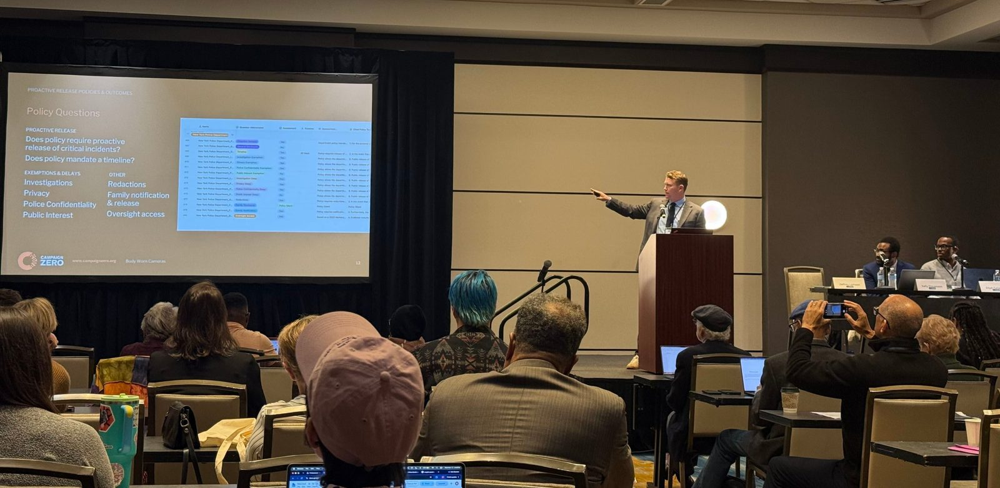

Jeffrey Lamson, PhD, MSEd
Historian of modern U.S. history, focusing on policing, technology, and the carceral state in the United States and the world.
Senior Research Analyst, Campaign Zero

About
I am a historian of modern U.S. history with a focus on policing, technology, and the carceral state. I received my PhD in World History from Northeastern University in 2026. My dissertation, Mobilizing Authority: Patrol Cars, Police Reform, and the Making of Modern Urban Policing in the United States and the World, examines how the patrol car reshaped police power, professionalization, and reform in American cities and beyond.
Alongside my scholarship, I am a Senior Research Analyst at Campaign Zero, where I lead data collection and analysis, write original research reports, and draft model policy on issues including police body-worn cameras, no-knock warrants, and solitary confinement. Using this research, we work with local organizers and legislators to reshape policies and laws to prioritize civil rights and democratic values in the criminal-legal system.
I maintain an active teaching load as an adjunct professor at Mercy University, and I have previously taught at Wesleyan University, the Wesleyan Center for Prison Education, and Northeastern University, and spent five years as a high school history teacher. I hold an MSEd from the University of Pennsylvania.
My research has been supported by the Society for Historians of American Foreign Relations, the Northeastern University Humanities Center, and the Brudnick Center on Violence and Conflict, and my public writing has appeared in The Washington Post, Public Books, and Jacobin.
Writing
Dissertation
-
Mobilizing Authority: Patrol Cars, Police Reform, and the Making of Modern Urban Policing in the United States and the World
PhD dissertation, Department of History, Northeastern University, 2026.
Peer-Reviewed Articles
- “Police Power in the American City.” Journal of Urban History. Forthcoming, 2026.
- “‘Must Your School Become a Fortress?’: Security Technology and Infrastructure in U.S. Schools, 1970–2000.” With Victoria Cain. Under review, Journal of Modern American History.
Public Writing
- “Fatal Chase: Cops and the Illusion of Control.” Public Books, August 2024.
- “Police cars are a form of PR — and the message is always the same.” The Washington Post, March 2023.
- “American Police Have Always Been Militarized.” Jacobin, February 2022.